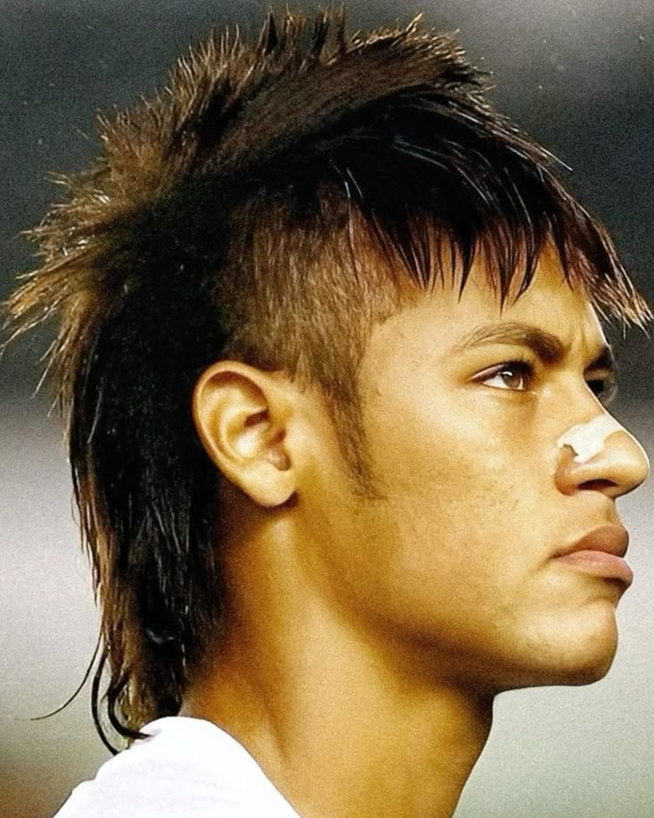
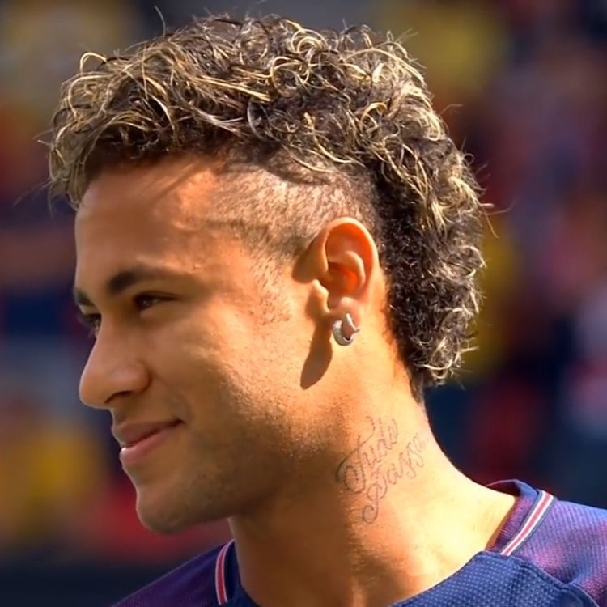
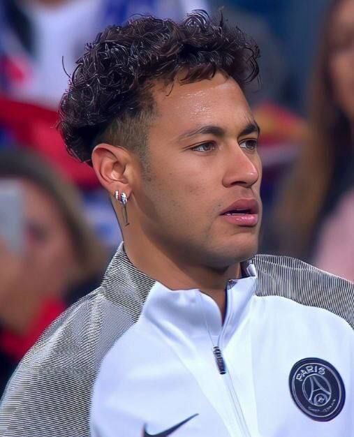
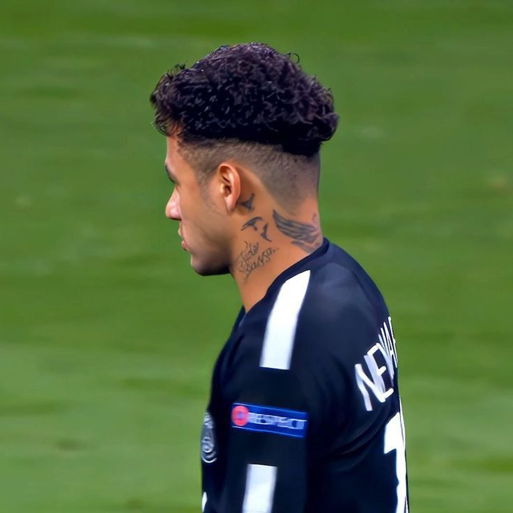
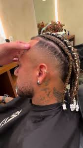
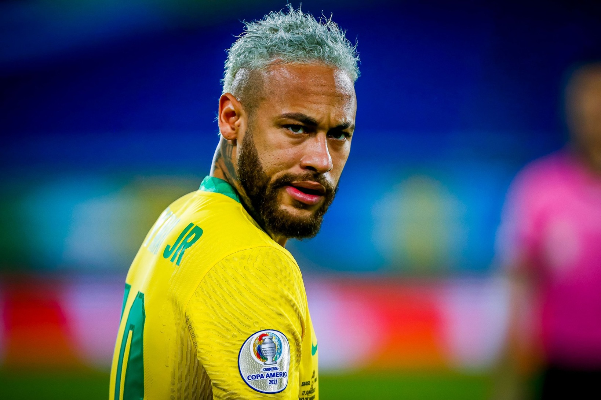
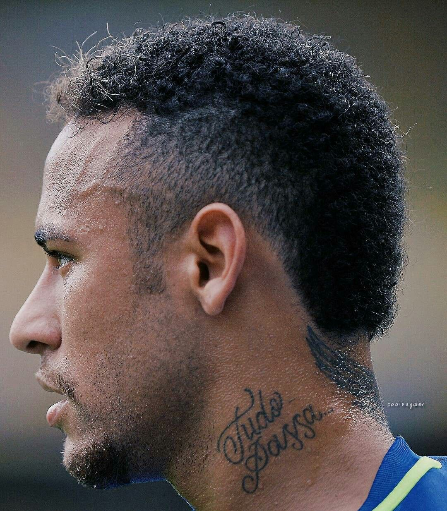

POLÊMICAS ICÔNICAS DE NEYMAR JR.
O craque é conhecido também por seus penteados estilosos. Veja alguns dos mais marcantes!

Moicano 2010
O visual que marcou o início da fama de Neymar no Santos.

Loiro Platinado 2018
Adotado durante a Copa da Rússia, virou tendência entre os fãs.

Cacheado Natural
Mais recente e casual, mostra o estilo maduro do jogador.

Undercut 2015
Com laterais raspadas e topo volumoso, Neymar ousou e chamou atenção mundial.

Tranças 2017
Estilo criativo e marcante, usado em partidas internacionais.

Topete Moderno
Visual elegante e despojado, muito usado em entrevistas e premiações.

Colorido Azul
Pintado temporariamente para campanhas publicitárias e diversão.

Moicano Curto 2012
Uma versão mais discreta do clássico moicano, mas ainda estilosa.